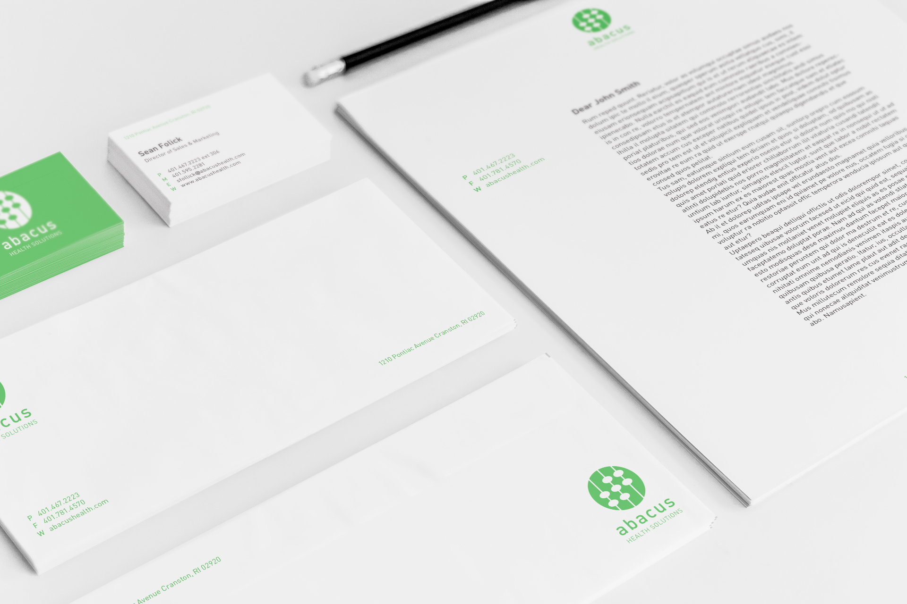

Abacus Healthcare Solutions is a consulting firm based in Cranston, RI that provides data-driven, client based medical solutions with a behavioral approach. Driven by a team of highly qualified experts in the field of healthcare quality research, Abacus needed a brand identity that reflected the systematic nature of the company. Upon research of international competitors in the industry, it became apparent that the existing Abacus identity lacked a competitive design.
The final mark is driven by the concept of abacus beads reflected in lowercase typography and counterforms. The ascending composition symbolizes progression while the color represents prosperity and well-being.


